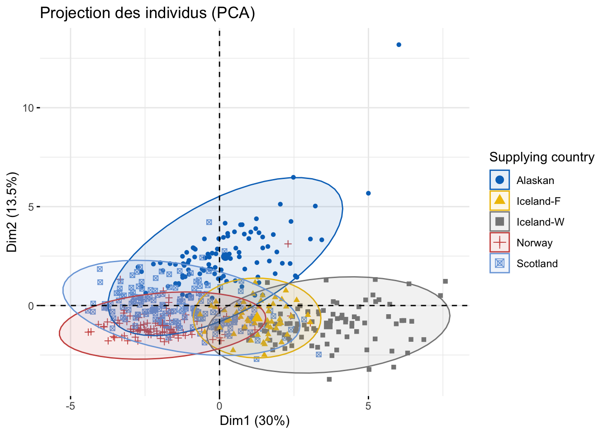
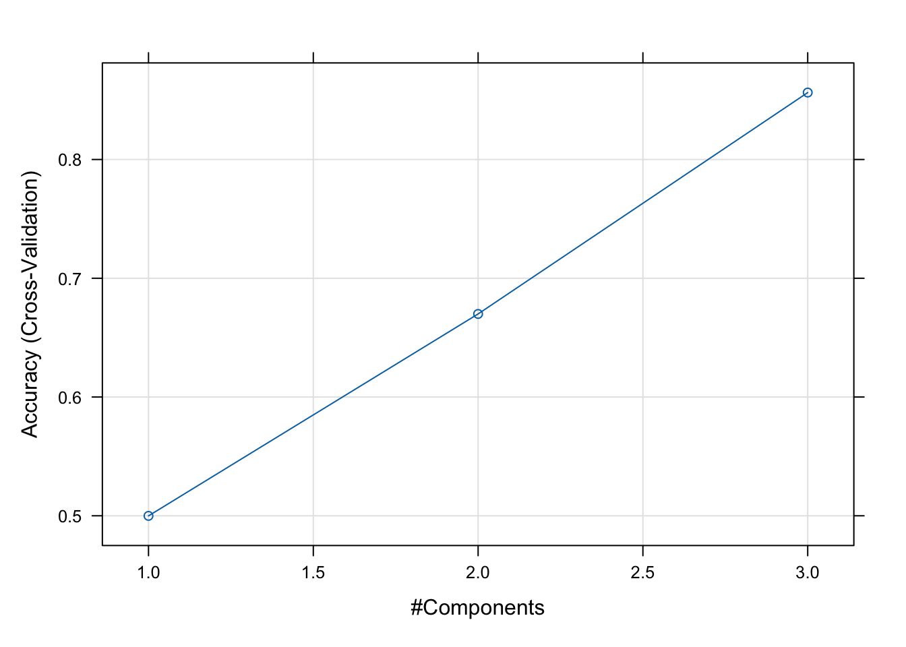

Analyse comparative de la spectrométrie du saumon de consommation et de son lieu de production
Dossier
Author
Paul Nestour
Published
May 16, 2024
Abstract
Ce dossier a été rédigé dans le cadre du cours ‘Modélisation avec des variables latentes’ pendant notre première année de Master ECA.
Introduction et démarche
L’étude initiale, issue de la publication “Data fusion and multivariate analysis for food authenticity analysis”, avait pour objectif d’établir un modèle permettant de déterminer l’authenticité du saumon en fonction de son origine géographique et de son mode d’élevage. Pour ce faire, les chercheurs se sont appuyés sur une base de données constituée de 521 échantillons de saumon provenant de fournisseurs de quatre pays différents (Alaska, Écosse, Norvège et Islande), avec des méthodes de production sauvage ou d’élevage, chaque pays ayant ses spécificités propres.
Ainsi, les chercheurs ont utilisé la spectrométrie de masse à plasma à couplage inductif (ICP-MS), une des techniques spectrométriques les plus importantes. Sa sensibilité extrêmement élevée et une large plage dynamique linéaire permettent l’analyse simultanée des composants principaux et des ultra-traces. Cette technique est capable d’analyser des éléments de Li à U et peut être appliquée aux solutions et aux solides. Son utilisation permet donc l’analyse quantitative d’éléments mineurs et est utilisée dans un large panel de processus industriels et agroalimentaires : qualification des matières premières, sécurité des produits, recherche et développement, contrôle de la production, analyse des défaillances, etc.
La démarche suivie dans cette analyse a été méthodique, impliquant plusieurs étapes clés pour aboutir à une interprétation cohérente des résultats. Tout d’abord, une analyse descriptive du jeu de données partiel a été réalisée, comprenant 20 éléments chimiques au lieu des 37 initiaux. Les variables des éléments chimiques ont été renommées et normalisées entre 0 et 1. Cette première analyse consistait en la visualisation des statistiques de base des variables (Min, Q1, médiane, Q3, max et moyenne), de leurs valeurs atypiques ou des potentielles valeurs manquantes, ainsi qu’à l’observation des corrélations entre les variables. Les résultats ont été interprétés pour identifier les tendances et les relations entre les variables.
Ensuite, le jeu de données a été divisé en deux ensembles : un ensemble d’apprentissage et un ensemble de test, en fonction de la variable de classe, et le jeu de test est réservé exclusivement à l’évaluation de la performance du modèle. On a procédé à l’ajustement d’un modèle de prédiction. En parallèle, un modèle PLS-DA a été ajusté en utilisant la méthode des moindres carrés partiels avec une validation croisée à 5 plis. Les résultats de la validation croisée ont été minutieusement analysés pour sélectionner le nombre optimal de composantes latentes. La performance du modèle a été évaluée en termes d’exactitude, de kappa et d’autres métriques, tandis que sa qualité prédictive a été évaluée en utilisant la matrice de confusion, la précision, le rappel et le score F1 sur l’ensemble de test. De plus, les variables importantes pour la discrimination entre les classes ont été identifiées à partir de l’importance des variables dans le modèle PLS-DA. Tous ces résultats ont ensuite été visualisés pour faciliter leur interprétation.
En conclusion, cette approche méthodique et exhaustive a permis d’explorer et d’analyser en profondeur les données ICP-MS Raw, en mettant en lumière les modèles, les tendances et les relations entre les variables. Les conclusions tirées fournissent une base solide pour comprendre et interpréter les mécanismes sous-jacents ainsi que les facteurs influençant les différentes classes présentes dans les données.
# Chargement des packages nécessairesinstall.packages("lattice")
The following package(s) will be installed:
- lattice [0.22-6]
These packages will be installed into "~/Documents/my_blog/renv/library/R-4.3/x86_64-apple-darwin20".
# Installing packages --------------------------------------------------------
- Installing lattice ... OK [linked from cache]
Successfully installed 1 package in 13 milliseconds.
library(readr)library(dplyr)
Attaching package: 'dplyr'
The following objects are masked from 'package:stats':
filter, lag
The following objects are masked from 'package:base':
intersect, setdiff, setequal, union
library(ggplot2)library(caret)
Loading required package: lattice
library(pls)
Attaching package: 'pls'
The following object is masked from 'package:caret':
R2
The following object is masked from 'package:stats':
loadings
# Lecture du fichier CSVICPMS_Raw_data <-read_csv("./ICPMS.csv")
Rows: 521 Columns: 38
── Column specification ────────────────────────────────────────────────────────
Delimiter: ","
chr (1): Class
dbl (37): 7 Li [ No Gas ], 9 Be [ No Gas ], 11 B [ No Gas ], 23 Na [...
ℹ Use `spec()` to retrieve the full column specification for this data.
ℹ Specify the column types or set `show_col_types = FALSE` to quiet this message.
# Conversion de la variable 'Class' en facteurICPMS_Raw_data$Class <-as.factor(ICPMS_Raw_data$Class)# Sélection des 20 éléments restantsselected_elements <-c("7 Li [ No Gas ]", "11 B [ No Gas ]", "27 Al [ He ]", "51 V [ He ]", "52 Cr [ He ]", "55 Mn [ He ]", "56 Fe [ He ]", "59 Co [ He ]", "60 Ni [ He ]", "63 Cu [ He ]", "66 Zn [ He ]", "75 As [ He ]", "78 Se [ He ]", "85 Rb [ He ]", "88 Sr [ He ]", "93 Nb [ He ]", "95 Mo [ He ]", "111 Cd [ He ]", "133 Cs [ He ]", "181 Ta [ He ]")# Sélectionner les colonnes spécifiéesselected_data <- ICPMS_Raw_data[, c("Class", selected_elements)]# Renommer les colonnesnames(selected_data)[-1] <-c("Li", "B", "Al", "V", "Cr", "Mn", "Fe", "Co", "Ni", "Cu", "Zn", "As", "Se", "Rb", "Sr", "Nb", "Mo", "Cd", "Cs", "Ta")# Sélection des colonnesselected_data <- ICPMS_Raw_data %>%select(Class, all_of(selected_elements)) %>%rename(Li =`7 Li [ No Gas ]`,B =`11 B [ No Gas ]`,Al =`27 Al [ He ]`,V =`51 V [ He ]`,Cr =`52 Cr [ He ]`,Mn =`55 Mn [ He ]`,Fe =`56 Fe [ He ]`,Co =`59 Co [ He ]`,Ni =`60 Ni [ He ]`,Cu =`63 Cu [ He ]`,Zn =`66 Zn [ He ]`,As =`75 As [ He ]`,Se =`78 Se [ He ]`,Rb =`85 Rb [ He ]`,Sr =`88 Sr [ He ]`,Nb =`93 Nb [ He ]`,Mo =`95 Mo [ He ]`,Cd =`111 Cd [ He ]`,Cs =`133 Cs [ He ]`,Ta =`181 Ta [ He ]` )# Sélection des colonnes à normalisercolumns_to_normalize <-c("Li", "B", "Al", "V", "Cr", "Mn", "Fe", "Co", "Ni", "Cu", "Zn", "As", "Se", "Rb", "Sr", "Nb", "Mo", "Cd", "Cs", "Ta")# Création d'une fonction pour la normalisation min-maxmin_max_normalize <-function(x) { (x -min(x)) / (max(x) -min(x))}# Appliquer la fonction de normalisation min-max à chaque colonne sélectionnéenormalized_data <- selected_data %>%mutate(across(all_of(columns_to_normalize), min_max_normalize))# Nettoyage des données (exemple : supprimer les lignes avec des valeurs manquantes)clean_data <-na.omit(normalized_data)head(clean_data)
# A tibble: 6 × 21
Class Li B Al V Cr Mn Fe Co Ni Cu Zn
<fct> <dbl> <dbl> <dbl> <dbl> <dbl> <dbl> <dbl> <dbl> <dbl> <dbl> <dbl>
1 Alas… 0.479 0.665 0.0201 0.150 0.0311 0.290 0.222 0.177 0.0215 0.124 0.807
2 Alas… 0.302 0.531 0.0204 0.0348 0.0120 0.294 0.163 0.0583 0.0473 0.0867 0.302
3 Alas… 0.334 0.468 0.0336 0.0990 0.0634 0.195 0.155 0.0780 0.0544 0.108 0.385
4 Alas… 0.314 0.473 0.0191 0.121 0.0586 0.0887 0.183 0.0375 0.0222 0.0697 0.295
5 Alas… 0.555 0.843 0.0211 0.0928 0.0823 0.215 0.316 0.0754 0.0577 0.115 0.514
6 Alas… 0.249 0.238 0.0169 0.0602 0.0349 0.118 0.194 0.0417 0.0228 0.127 0.334
# ℹ 9 more variables: As <dbl>, Se <dbl>, Rb <dbl>, Sr <dbl>, Nb <dbl>,
# Mo <dbl>, Cd <dbl>, Cs <dbl>, Ta <dbl>
#Statistiques récapitulativessummary(clean_data)
Class Li B Al
Alaskan : 99 Min. :0.0000 Min. :0.00000 Min. :0.00000
Iceland-F: 55 1st Qu.:0.1144 1st Qu.:0.06842 1st Qu.:0.02015
Iceland-W: 90 Median :0.2045 Median :0.26722 Median :0.03133
Norway :100 Mean :0.2369 Mean :0.28434 Mean :0.05266
Scotland :177 3rd Qu.:0.3329 3rd Qu.:0.43481 3rd Qu.:0.05993
Max. :1.0000 Max. :1.00000 Max. :1.00000
V Cr Mn Fe
Min. :0.00000 Min. :0.00000 Min. :0.0000 Min. :0.00000
1st Qu.:0.06583 1st Qu.:0.03273 1st Qu.:0.1294 1st Qu.:0.06713
Median :0.10658 Median :0.06286 Median :0.1844 Median :0.10977
Mean :0.12082 Mean :0.09437 Mean :0.2096 Mean :0.14250
3rd Qu.:0.15987 3rd Qu.:0.11733 3rd Qu.:0.2753 3rd Qu.:0.19804
Max. :1.00000 Max. :1.00000 Max. :1.0000 Max. :1.00000
Co Ni Cu Zn
Min. :0.0000 Min. :0.000000 Min. :0.00000 Min. :0.0000
1st Qu.:0.1515 1st Qu.:0.007158 1st Qu.:0.04898 1st Qu.:0.2259
Median :0.2765 Median :0.012419 Median :0.08275 Median :0.3912
Mean :0.2809 Mean :0.034544 Mean :0.09374 Mean :0.3831
3rd Qu.:0.3814 3rd Qu.:0.029384 3rd Qu.:0.12014 3rd Qu.:0.5114
Max. :1.0000 Max. :1.000000 Max. :1.00000 Max. :1.0000
As Se Rb Sr
Min. :0.0000 Min. :0.0000 Min. :0.0000 Min. :0.00000
1st Qu.:0.0932 1st Qu.:0.1378 1st Qu.:0.2324 1st Qu.:0.06777
Median :0.1697 Median :0.3123 Median :0.3570 Median :0.11029
Mean :0.2188 Mean :0.3412 Mean :0.3761 Mean :0.13182
3rd Qu.:0.2925 3rd Qu.:0.5109 3rd Qu.:0.5108 3rd Qu.:0.17488
Max. :1.0000 Max. :1.0000 Max. :1.0000 Max. :1.00000
Nb Mo Cd Cs
Min. :0.000000 Min. :0.00000 Min. :0.00000 Min. :0.0000
1st Qu.:0.009093 1st Qu.:0.09524 1st Qu.:0.00578 1st Qu.:0.1252
Median :0.021218 Median :0.13810 Median :0.01908 Median :0.2064
Mean :0.052736 Mean :0.14691 Mean :0.09101 Mean :0.2475
3rd Qu.:0.046410 3rd Qu.:0.18095 3rd Qu.:0.15029 3rd Qu.:0.3545
Max. :1.000000 Max. :1.00000 Max. :1.00000 Max. :1.0000
Ta
Min. :0.00000
1st Qu.:0.01732
Median :0.03816
Mean :0.07016
3rd Qu.:0.07411
Max. :1.00000
#Corrélations entre les variablescor_matrix <-cor(clean_data[, -1]) # Exclure la variable de classecorrplot::corrplot(cor_matrix, method ="circle")

# Sélectionner les corrélations supérieures à 0.8high_corr <-which(cor_matrix >0.8& cor_matrix <1, arr.ind =TRUE)# Afficher les paires de variables corréléeshigh_corr_pairs <-data.frame(row =rownames(cor_matrix)[high_corr[,1]],col =colnames(cor_matrix)[high_corr[,2]],corr_value = cor_matrix[high_corr])high_corr_pairs
row col corr_value
1 Se Zn 0.8192668
2 Zn Se 0.8192668
3 Cs Rb 0.8668789
4 Ta Nb 0.9427543
5 Rb Cs 0.8668789
6 Nb Ta 0.9427543
# Distribution de la variable Classtable(clean_data$Class)
# Définition de la variable de classeclasse_variable <-"Class"# Création de l'ensemble d'apprentissage et de l'ensemble de testset.seed(123) # Pour la reproductibilitéindex <-createDataPartition(clean_data[[classe_variable]], p =0.8, list =FALSE)data_train <- clean_data[index, ]data_test <- clean_data[-index, ]# Définition du contrôle de la validation croiséetrain_control <-trainControl(method ="cv", number =5) # Validation croisée à 5 plis# Ajustement du modèle PLS-DApls_model <-train(Class ~ ., data = data_train, method ="pls", trControl = train_control, preProc =c("center", "scale"))
# Affichage des résultatsprint(pls_model)
Partial Least Squares
418 samples
20 predictor
5 classes: 'Alaskan', 'Iceland-F', 'Iceland-W', 'Norway', 'Scotland'
Pre-processing: centered (20), scaled (20)
Resampling: Cross-Validated (5 fold)
Summary of sample sizes: 335, 334, 335, 333, 335
Resampling results across tuning parameters:
ncomp Accuracy Kappa
1 0.4999150 0.3001568
2 0.6699453 0.5504397
3 0.8563616 0.8079397
Accuracy was used to select the optimal model using the largest value.
The final value used for the model was ncomp = 3.
# Visualisation de la performance du modèleplot(pls_model)

model=pls_model# Prédictions sur les données de testpredictions <-predict(model, newdata = data_test)# Matrice de confusionconf_matrix <-table(predictions, data_test$Class)print(conf_matrix)